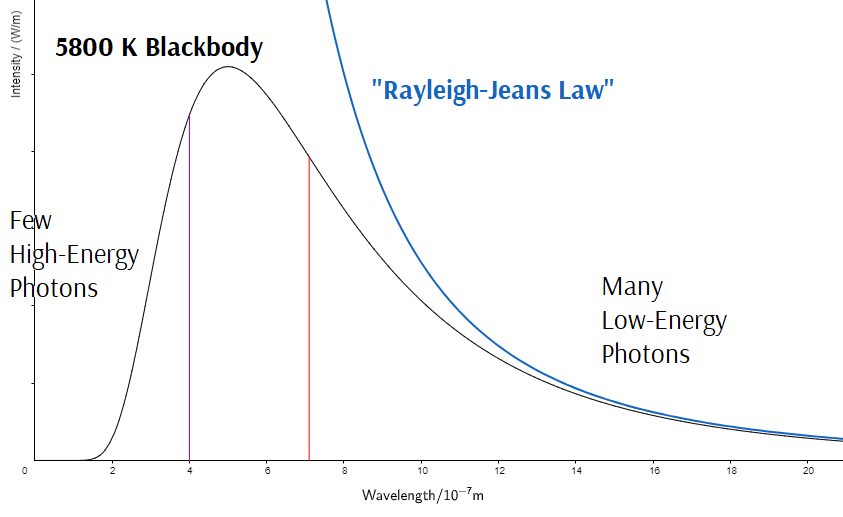

Photons
Albert Einstein proposed that EMR exhibited wave-particle duality: it sometimes behaves like waves (as described by Maxwell) and sometimes behaves like particles. Particles of EMR are called photons:
- Photons travel at the speed of light, \(c\).
- Photons have no mass and no inertia.
- Photons cannot be accelerated or decelerated, but they can be absorbed and emitted by accelerating charged particles.
- Photons do have energy and momentum.
- According to Einstein, the Newtonian formulas \(\vec{\mathbf p} = m\vec{\mathbf v}\) and \(E_k = \frac{1}{2}mv^2\) only apply at speeds that are much slower than \(c\).
- Einstein’s theory of relativity argues that particles with no mass can still have momentum! The relationships between the wavelength and frequency of the EM wave and the energy and momentum of each photon are: $$E = hf = \frac{hc}{\lambda} = cp$$
- The constant \(h\) is known as Planck’s constant: $$h = \mathrm{6.63\times 10^{-34}\ J\cdot s = 4.14\times 10^{-15}\ eV\cdot s}$$
- Einstein proposed this photon theory in order to explain two phenomena that could not be properly explained using Maxwell’s wave theory: (1) the blackbody radiation spectrum, and (2) the photoelectric effect (which we will discuss in the next lesson).
Quantization
One of the consequences of the photon theory is that the energy of an EM wave is quantized.
- The smallest amount of energy that an EM wave can have is \(hf\), the energy of a single photon.
- The total energy of an EM wave will be a multiple of \(hf\), since the number of photons must be a whole number.
- Another quantity that is quantized is electic charge; because it is carried by electrons and protons, total charge is always a multiple of \(e\).
- Even before Einstein developed the photon theory, Max Planck had hypothesized that the energy of EM waves was quantized.
Planck’s Hypothesis
Scientists at the end of the 19th century were unable to explain the blackbody spectrum we studied in the last lesson.
- Their calculations (known as the Rayleigh-Jeans Law) indicated that the intensity should keep increasing to infinity at shorter wavelengths. This was called the ultraviolet catastrophe.

- In reality the intensity reaches a peak and then decreases gradually to zero.
- Planck realized that energy quantization could resolve the problem...
- If the quantum of energy is \(hf\), Planck argued, it would take a lot of energy to emit high frequency (short wavelength) EMR.
- These wavelengths would only be emitted at very high temperatures (Wien’s Law!) when the colliding molecules have sufficient energy.
- At lower temperatures, most molecules would not have enough energy to emit even a single photon of short wavelength EMR.
- For example, at room temperature an average molecule only has about 40 millielectron-volts of kinetic energy. Room temperature objects are unlikely to emit photons with energy more than a few times larger than this average.
- Planck repeated the calculations that other scientists had made, adding his assumption the EM waves had an energy quantum of \(hf\).
- His results agreed with the observed blackbody spectrum!
- Planck determined that the value of the constant \(h\) must be \(\mathrm{6.63\times 10^{-34}\ J\cdot s}\) for the peak of his calculated blackbody spectrum to agree with the observed spectrum, as described by Wien’s Law.
Example 1
Calculate the energy and momentum of each photon of red light at 632 nm.
$$E = \frac{hc}{\lambda} = \mathrm{\frac{(6.63\times 10^{-34}\ J\cdot s) (3.00\times 10^8\ m/s)}{6.32\times 10^{-7}\ m}}$$
$$E = \mathrm{3.15\times 10^{-19}\ J}$$
$$E = cp$$
$$p = \frac{E}{c} = \mathrm{\frac{3.15\times 10^{-19}\ J}{3.00\times 10^8\ m/s}}$$
$$p = \mathrm{1.05\times 10^{-27}\ N\cdot s}$$
Example 2
Calculate the frequency and wavelength of a photon with an energy of 40.0 meV.
$$E = hf$$
$$f = \frac{E}{h} = \mathrm{\frac{0.0400\ eV}{4.14\times 10^{-15}\ eV\cdot s} = 9.66\times 10^{12}\ Hz}$$
$$\lambda =\frac{c}{f} = \mathrm{\frac{3.00\times 10^8\ m/s}{9.66\times 10^{12}\ Hz} = 3.11\times 10^{-5}\ m}$$